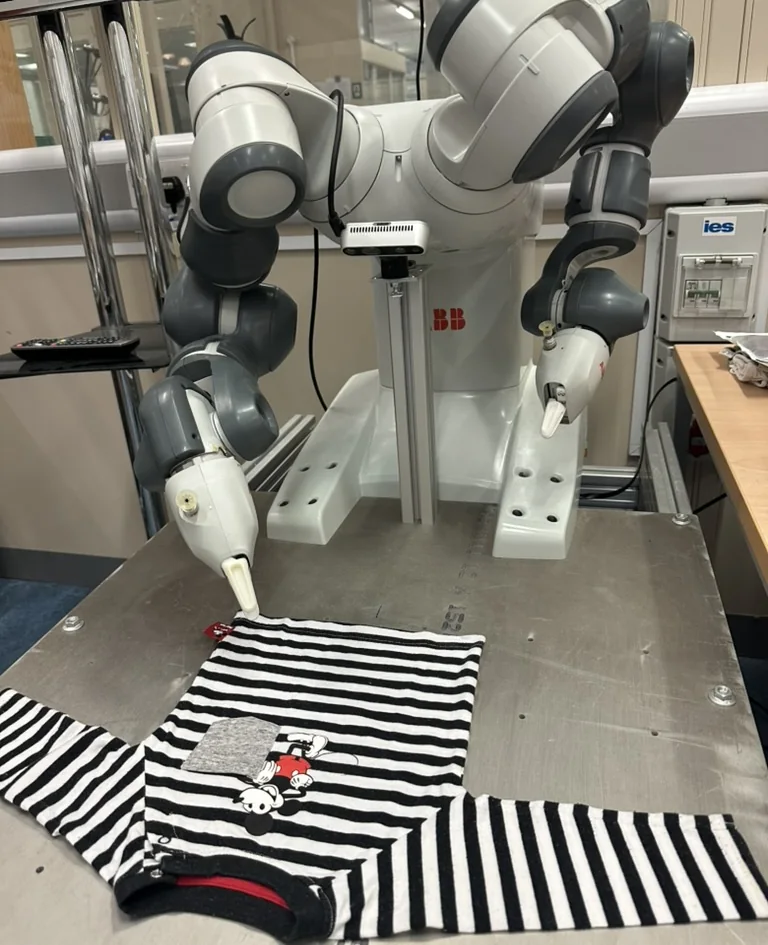
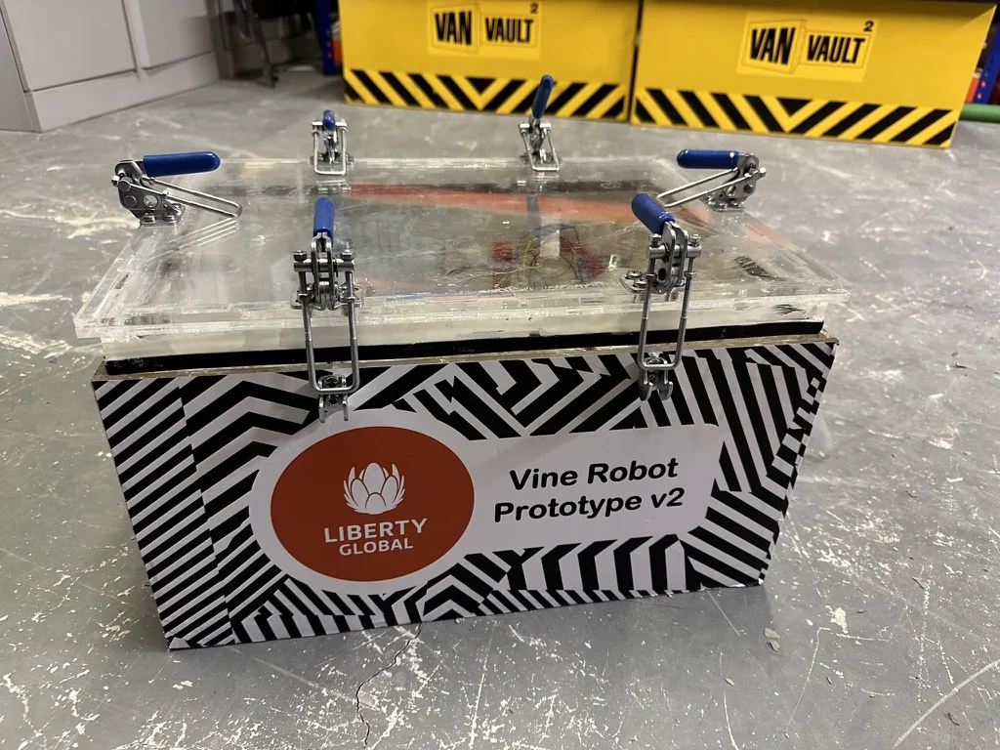
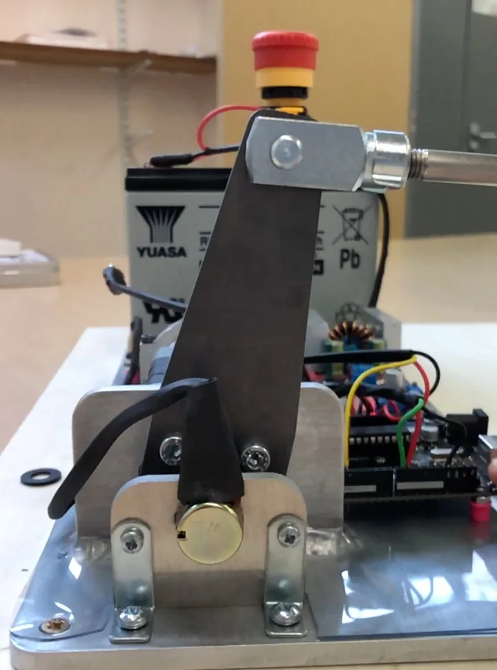
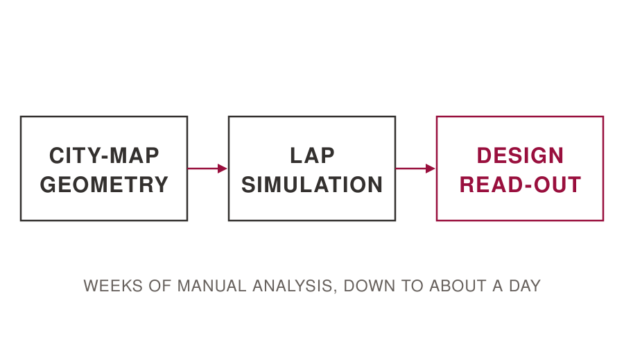
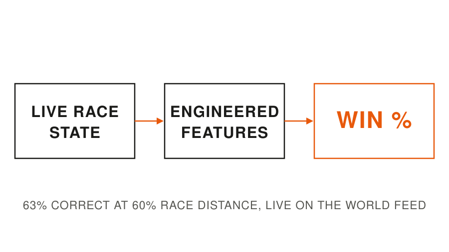
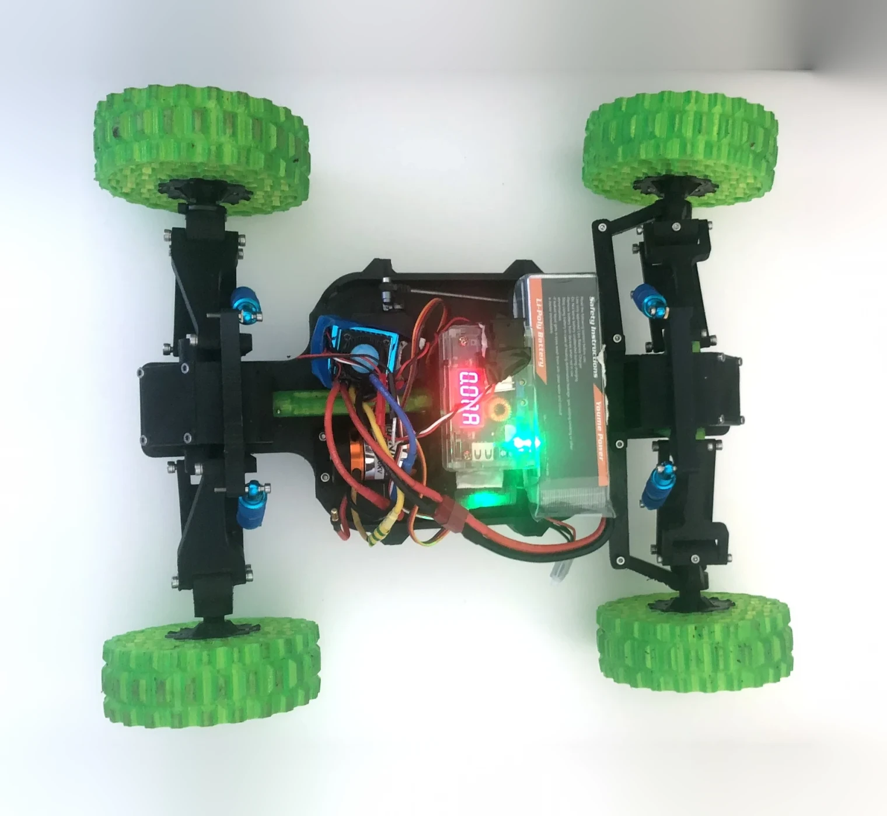
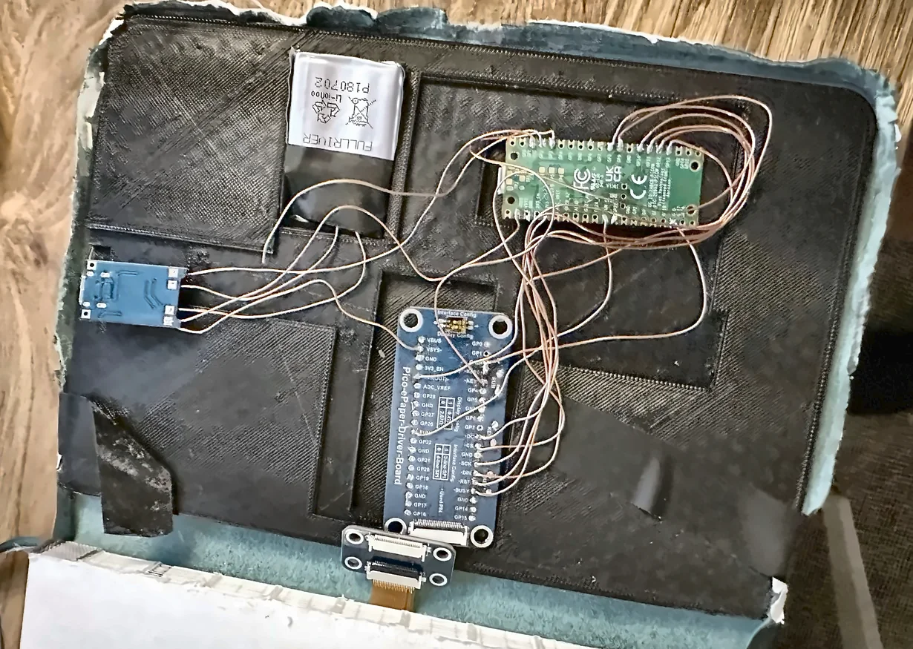
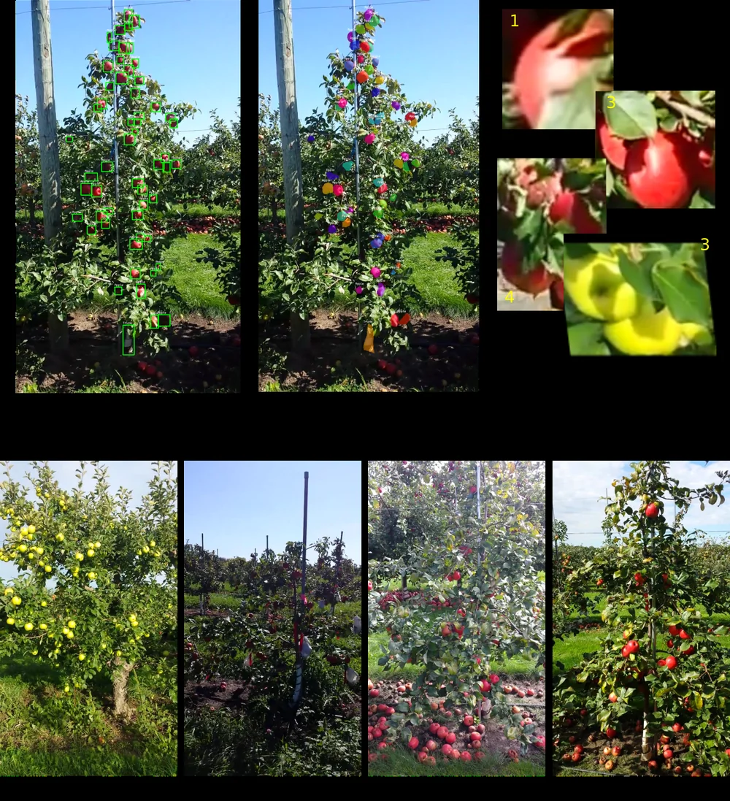
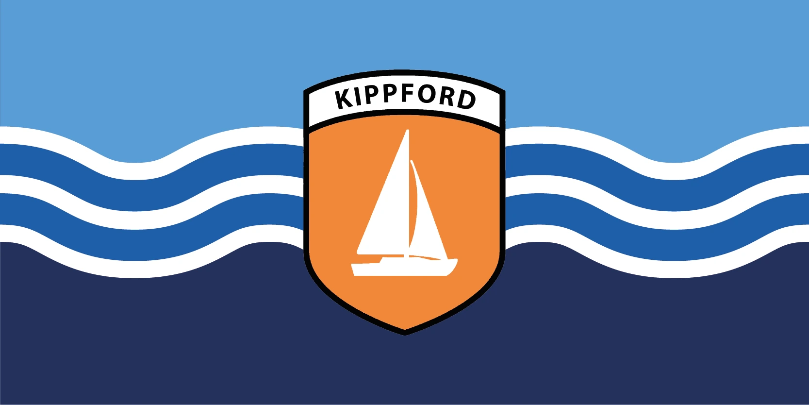

I am an AI/Data Engineer at the FIA Formula E World Championship and an MSc Robotics student. Most recently that has meant a dissertation investigating the integration of tactile feedback into vision-language-action models, prediction and simulation tooling for the championship, and a soft robot that installs fibre-optic cable through buried ducting.
- MSc RoboticsUniversity of Bristol
- MEng Mechatronic EngineeringUniversity of Southampton
Selected projects
Nine projects, each written up with what it was for and what came out of it.
-

In progressTactile perception in VLA models
MSc research comparing three ways of giving a pretrained VLA access to touch, evaluated on cloth folding with an ABB YuMi.
-

Soft vine robot for fibre installation
A robot that grows along buried ducting to pull fibre-optic cable, now in production after field trials.
-

Autonomous pedal-actuation robot
Retrofitting autonomous control onto a conventional vehicle, from mechanical design through to a characterised closed-loop actuator.
-

Circuit design simulation
Lap-simulation tooling the track-design team uses to evaluate a prospective circuit before any survey data exists.
-

Live race-outcome prediction
Win prediction built in-house, replacing an external model that predicted the winner correctly less than half the time.
-

A low-cost radiation telerobot
A £281 teleoperated rover carrying a georeferenced Geiger counter, which traced a buried effluent pipeline the most recent site survey had not documented.
-

E-paper summaries in a notebook cover
An e-paper display built into the cover of a hardback notebook, driven by a Pico, summarising the handwritten pages inside it.
-

Detecting and counting apples in orchards
Faster R-CNN and YOLO compared on the same orchard dataset for detection, counting and instance segmentation.
-

The village flag of Kippford
Designed for the community's flag competition, through eleven proposals to an adopted design that now flies.
Other projects
Smaller projects, mostly built for my own use, live on my GitHub profile.
Get in touch
I'm looking for robotics and applied-ML roles from September 2026, and I'm open to relocating to the US or Canada. I'm a British citizen, eligible for a Canadian IEC open work permit with no sponsorship needed, and for a J-1 visa in the US.
The fastest way to reach me is tbbgreen@gmail.com.